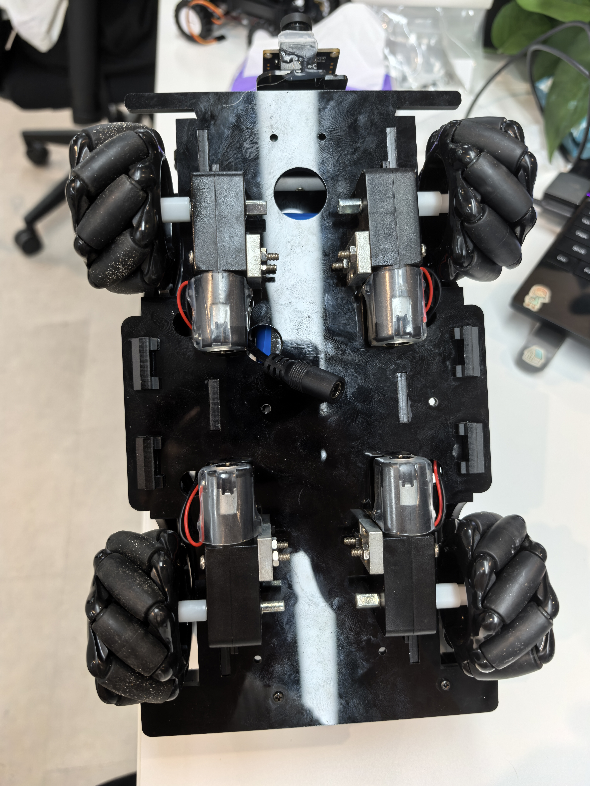

4.1 底盘控制原理
差速转向模型实现
差速转向是轮式移动机器人最基础也是最常用的运动控制方式。在本项目中，我们采用四轮底盘结构，其中两个主动轮分别位于左右两侧。这种设计的核心原理在于通过控制左右轮的速度差来实现转向：当左右轮以相同速度转动时，机器人直线前进；当左右轮速度不同时，机器人会向速度较慢的一侧转向。

在项目中，差速转向模型通过控制左右轮速比实现：
# motor/Motor.py - PCA9685Motor类
class PCA9685Motor:
def __init__(self, d1, d2, d3, d4):
"""初始化PCA9685电机控制器"""
self.interval = 0.05
self.last_time = time.time()
self.PCA9685_ADDRESS = 0x60 # I2C地址
self.bus = smbus.SMBus(2) # 使用I2C总线2
def Control(self, data: MoveData):
"""控制机器人运动"""
# 将速度转换为PWM占空比 (0-4095)
speed_pwm = int(data.speed * 4095 / 100)
# 设置所有电机相同的基础速度
self.set_pwm(speed_pwm, speed_pwm, speed_pwm, speed_pwm)
# 根据方向执行不同动作
actions = {
0: self.Stop, # 停止
1: self.Advance, # 前进
2: self.Back, # 后退
5: self.Turn_Left, # 左转
6: self.Turn_Right # 右转
}
# 执行对应动作
if data.direction in actions:
actions[data.direction]()
差速转向原理详解
差速转向模型的核心是控制左右轮的速度差：
- 直线前进：左右轮速度相同
- 左转：右轮速度 > 左轮速度
- 右转：左轮速度 > 右轮速度
- 原地旋转：左右轮速度相等但方向相反
通过PCA9685控制器实现这一模型：
# motor/Motor.py中的转向控制实现
class PCA9685Motor:
def Advance(self):
"""前进：所有电机正转"""
self.Status_control(1, 1, 1, 1)
def Back(self):
"""后退：所有电机反转"""
self.Status_control(-1, -1, -1, -1)
def Turn_Left(self):
"""左转：右轮前进，左轮后退"""
self.Status_control(1, -1, 1, -1)
def Turn_Right(self):
"""右转：左轮前进，右轮后退"""
self.Status_control(-1, 1, -1, 1)
def Status_control(self, m1, m2, m3, m4):
"""
控制四个电机的状态
参数:
m1-m4: 每个电机的方向（1:正转, -1:反转, 0:停止）
"""
# 设置每个电机的PWM信号
self.set_motor_pwm((1, 2), m1) # 电机1
self.set_motor_pwm((3, 4), m2) # 电机2
self.set_motor_pwm((7, 8), m3) # 电机3
self.set_motor_pwm((9, 10), m4) # 电机4
def set_motor_pwm(self, channel_pair, direction):
"""
设置单个电机的PWM信号
参数:
channel_pair: 电机对应的两个通道
direction: 电机方向（1, -1, 0）
"""
ch1, ch2 = channel_pair
if direction == 1: # 正转
self.set_channel_pwm(ch1, 0) # 通道1低电平
self.set_channel_pwm(ch2, 4095) # 通道2高电平
elif direction == -1: # 反转
self.set_channel_pwm(ch1, 4095) # 通道1高电平
self.set_channel_pwm(ch2, 0) # 通道2低电平
else: # 停止
self.set_channel_pwm(ch1, 0)
self.set_channel_pwm(ch2, 0)
位姿估计实现
使用编码器数据进行位姿估计：
# motor/main.py - 位姿估计实现
import math
class Odometry:
def __init__(self, wheel_radius, wheel_base):
"""初始化里程计"""
self.wheel_radius = wheel_radius # 轮子半径（米）
self.wheel_base = wheel_base # 轮距（米）
self.x = 0.0 # X坐标
self.y = 0.0 # Y坐标
self.theta = 0.0 # 朝向角度（弧度）
def update(self, left_distance, right_distance):
"""更新位姿估计"""
# 计算线位移和角位移
delta_distance = (left_distance + right_distance) / 2
delta_theta = (right_distance - left_distance) / self.wheel_base
# 更新位姿
self.x += delta_distance * math.cos(self.theta + delta_theta / 2)
self.y += delta_distance * math.sin(self.theta + delta_theta / 2)
self.theta += delta_theta
# 归一化角度到[-π, π]范围
self.theta = (self.theta + math.pi) % (2 * math.pi) - math.pi
return self.x, self.y, self.theta